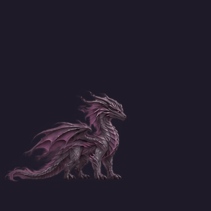

<!doctype html><html lang="ko"><meta charset="utf-8"><title>그림자용 스킬 미리보기</title><style>body{background:#15121c;color:#eee5fa;font:16px system-ui;margin:0;text-align:center}main{max-width:850px;margin:40px auto;padding:0 15px}nav{display:flex;justify-content:center;gap:8px;flex-wrap:wrap}button{background:#292234;color:inherit;border:1px solid #524266;border-radius:8px;padding:10px;cursor:pointer}button[aria-pressed=true]{background:#62389a}img{display:block;margin:22px auto;width:min(560px,100%);border-radius:12px;border:1px solid #433653}</style><main><h1>그림자용 스킬 미리보기</h1><nav><button onclick="play('vortex',this)">움브랄 볼텍스</button><button onclick="play('fang',this)">심연의 송곳니</button><button onclick="play('veil',this)">어스름 장막</button><button onclick="play('step',this)">그림자 걸음</button><button onclick="play('leap',this)">잔영 도약</button></nav><button onclick="play(current,selected)">처음부터</button></main><script>let current='vortex',selected=document.querySelector('nav button');selected.setAttribute('aria-pressed','true');function play(key,button){selected.setAttribute('aria-pressed','false');selected=button;selected.setAttribute('aria-pressed','true');current=key;const img=document.getElementById('stage');img.alt=button.textContent;img.src=key+'.gif?'+Date.now();}</script></html>